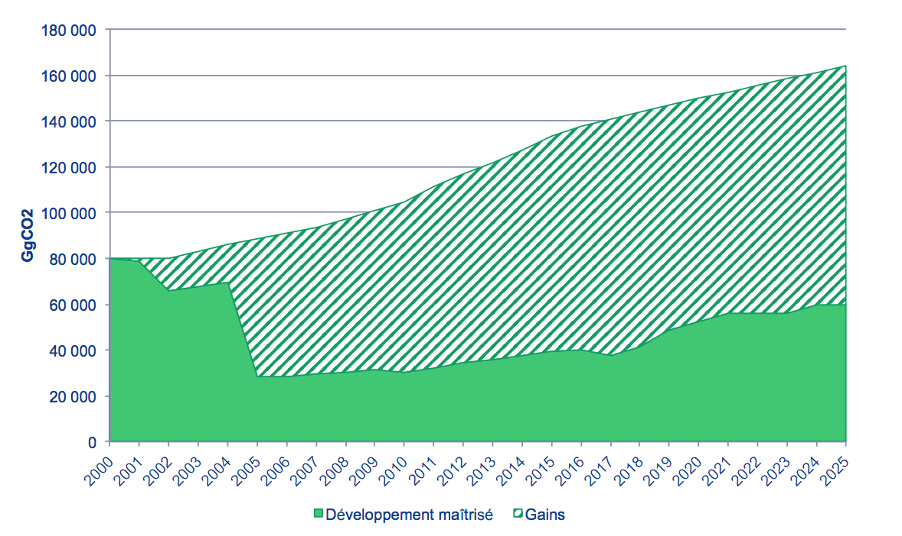
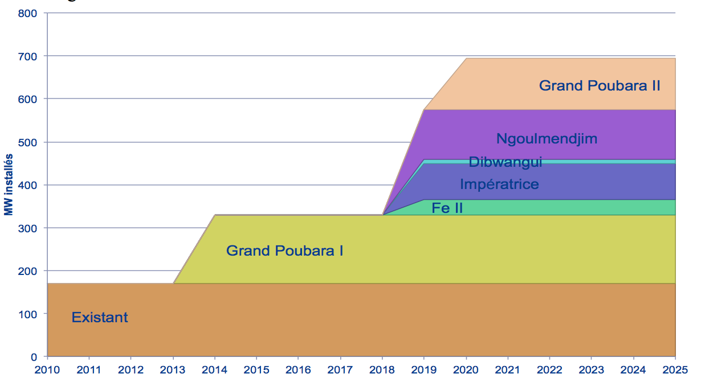

Planned contribution at national level - Conference of the Parties 21 31 March 2015
In accordance with Decisions 1 / CP.19 and 1 / CP.20 and its Strategic Development Plan, Gabon communicates, through this document, its nationally defined contribution (INDC) to address climate change and all related information. The elements included in the National Contribution of Gabon are the synthesis of Gabon's ambitions and public policies, which, at the moment of making a turn in its development, chooses to commit itself resolutely to a sustainable development, based in particular on Controlled GHG emissions
This submission is doubly important for Gabon, due, on the one hand, to the commitment of the President of the Republic to pursuing a sustainable development policy and, on the other hand, to contributing to the global effort to reduce the rise in temperature.
| Type of commitment | Reduction from an uncontrolled development scenario |
| Perimeter | Total GHG emissions excluding carbon storage in biomass forests |
| GHG | CO2, CH4, N2O (HFC, PFC, SF6 and NF3 Will be covered later) |
| Year of Reference | 2000 |
| Period | 2010-2025 (period of the Emerging Gabon Strategic Plan) These analyzes will be extended to 2030 or even 2050 within the framework of the Further studies to be carried out before COP21 |
| Level of reduction | At least 50% reduction in emissions compared to the Development in 2025 |
| Carbon credits | No reduction from purchases of carbon credits outside Gabon |
Cumulatively, Gabon's commitments must reduce GHG emissions by more than 1,500,000 GgCO2 over 2010-2025, ie 65% compared to the trend scenario.
In 2025, the gains are in the order of 62% compared to the trend scenario.

This submission will be supplemented by the Climate Conference of annexes detailing more precisely the scenarios and measures envisaged by Gabon to follow up and fulfill its commitments.
Covered 88% by the forest, Gabon, like many forest countries, plays a role of "sink" of carbon by absorbing more than 4 times more CO2 than it emits.

The numerous measures already taken by Gabon (Forest Code in 2001, the creation of 13 national parks covering almost 11% of the territory in 2002, etc.) all contribute to sustaining the role played by the Gabonese forest in the storage of carbon.
Excluding carbon storage in biomass, Gabon's GHG profile is as follows:

Gabon does not wish to limit its Climate policy to the simple conservation of forests, using international financing mechanisms. This logic of rent would be Economic and social development by enslaving it to external mechanisms unrelated to the real economy.
That is why the commitments made by Gabon relate exclusively to its GHG emissions excluding carbon storage by biomass.
Within this restricted perimeter, Gabon's emissions are distributed as follows:

Developing countries and population growth, Gabon cannot commit itself to an absolute reduction in its GHG emissions, but rather to a mastery of these in the context of its development.
The underlying taken into account are:
Two scenarios of GHG emissions have therefore been developed:
With more than 60% of direct emissions, land use and its corollary, land-use change, play a crucial role in achieving Gambia's ambitious GHG reduction targets.
In relation to this development, the controlled development scenario rests on:

By taking into account forest-related emissions (which were not included in the national GHG emissions inventory), these measures will reduce GHG emissions by more than 1,500,000 GgCO2 over 2010- 2025, ie 68% compared to the trend scenario (63% in 2025)
Representing 23% of direct emissions in 2000, emissions associated with the flaring of associated gas in oil production have been the subject of several measures.
These measures include the 2007 accession to the World Bank's Global Gas Flaring Reduction (GGFR) initiative, the promulgation in 2014 of Law No. 011/2014 regulating the hydrocarbon sector in the Gabonese Republic Banning continuous flaring in Gabon and this, consistent with the participation of Gabon this year in the initiative "Zero Torching of Routine by 2030" launched by the GGFR.
These measures already have a very significant impact on GHG emissions.

Over the period 2010-2025, this voluntarist policy will reduce GHG emissions by 17,341 GgCO2, or 41% of emissions (63% in 2025).
The main means of implementing this reduction plan in Gabon, which are the re-injection and the production of electricity, involve investments particularly in compression units. This investment is part of the "oil costs", ie expenses incurred by the operators to which Gabon recognizes a right of recovery on the zone of exploitation as indicated in the Gabonese hydrocarbon code. This is equivalent to a reimbursement of all these costs to operators by Gabon.
Emissions from local burning of fossil fuels represent the third station of emissions

The control of GHG emissions related to electricity production and consumption depends mainly on two types of measures:
A historical analysis of the period 2000-2010 shows that the energy efficiency of the Gabonese economy has improved on average by 3.8% per year.
The Gabon wishes to build on this momentum and continue to improve energy efficiency on this basis, with a target of about 4 000 GWh consumed in 2025.

On this basis, Gabon has developed an ambitious plan for the development of hydroelectricity, with the objective of ensuring by 2025 a supply of electricity based on 80% on hydroelectricity and 20% on gas.

On this basis, this plan will reduce GHG emissions by 9,000 GgCO2 over 2010-2025, ie 31% compared to the trend scenario (48% in 2025)

These production capacities will also make it possible to export about 5,000 GWh over the period 2010-2025.
Finally, Gabon is also developing a solar electrification of remote villages plan. This plan will improve access to energy in rural areas without use of fossil fuels
GHG emissions from energy industries excluding electricity are due to the petroleum industry. These emissions thus follow the oil production curve, as shown in the following graph.

Given the relative low stakes, Gabon has no reduction commitments in this sector.
Transport emissions accounted for only 2.4% of emissions in 2000 (but 20% of energy emissions). While there has not yet been a complete macroscopic study of this sector, many projects are planned, including infrastructure projects (with many planned routes), development of common transportation (e.g. in Libreville, to combat congestion) or changes in legislation (e.g. the ban on the import of vehicles over 3 years old).
In the absence of additional data, Gabon undertakes to control rising Energy consumption related to transport 80% of the baseline scenario in 2025.

On this basis, Gabon has developed an ambitious plan for development of hydropower, with aims to ensure that by 2025 the supply of electricity based on hydropower 80% and 20% on gas.

This section covers the energy consumption (excluding electricity) of industry (excluding petroleum industry), commerce and institutions (including administration), households, agriculture, fisheries and forestry.
Again, no macroscopic study is available but according to the general philosophy of its development, Gabon is committed to contain the growth of these emissions.
In the uncontrolled development scenario, the evolution of GHG emissions follows the evolution of GDP, whereas in the controlled development scenario, the carbon intensity of the GDP decreases by 2% per year.
On this basis, this commitment should reduce GHG emissions by 3 500 GgCO2 by 2015-2025, ie 8% compared to the trend scenario (18% in 2025).
Emissions from waste, industrial processes (cement works) and agriculture represent 4th station of programs.

Gabon undertakes to halve greenhouse gas emissions related to waste processing and water waste in 2025. Taking into account horizon of the expected evolution of the population, this commitment must reduce greenhouse gas emissions over 2000 GgCO2 on 2015-2025, or 16% the trend scenario (50% in 2025).

In the absence of clarification, these sectors are excluded from this contribution.
Gabon's vision for adaptation is based on the integration of this component into a coherent investment framework based on the country's development strategy, rather than individual isolated aid or subsidies unrelated to the strategy.
To this end, Gabon has adopted such a National Adaptation Strategy coastline face effects of climate change. This comes through measures to management integrated coastal area by the establishment of an appropriate legal framework, acquiring tools and finally monitoring the training and information.
Moreover, the general guidelines of the strategy advocated the implementation of a scheme the development of coastal urban areas, promotion of income generating activities linked to marine and coastal ecosystems. To this we must add a device comprising projects conservations of mangroves for coastal protection, species protection, the establishment specific facilities for the reception and waste management, monitoring of nesting marine turtles and the establishment of a coastal observatory and the marine environment
The cities of Libreville and Port-Gentil, which are particularly exposed, are subject to protection measures on the coast by physical barriers and rehabilitation works on the banks. The economic zone of Mandji Island has a surplus.
This strategy enshrines Gabon's commitment to taking action against climate change by taking into account the adaptation of its territory to the effects of these
As indicated in paragraph B "Philosophy of Commitments of Gabon", the country has engaged both sectoral measures or regulations (forest code, creation of national parks, national flaring reduction plan, ban on log exports, etc.). ) As a regulation governing the general functioning of the economy, in application of the Law on the Orientation of Sustainable Development.
In all cases, these measures and regulations have a direct or indirect impact on GHG, as well as other Sustainable Development variables such as biodiversity, ecosystems and social and community capital. In particular, the application of the market mechanism induced by the Sustainable Development Guidelines Act has an incentive, behavioral and financial effect on the overall reduction of GHG emissions on all activities of the country.
Future studies will help quantify the reduction in expected emissions.
The Act on the orientation of Sustainable Development provides for the establishment of a National Fund Sustainable development. The creation of this fund is under review and will be positioned in the line of National Climate Fund that develop in different countries, taking into account the particularities of the Gabonese strategy. The Fund will channel and stimulate a part of financial flows dedicated to reducing emissions and more broadly to sustainable development: (1) state budget, (2) private investments, (3) credits revenue from the domestic market, (4) donor contributions or loans funds).
In the meantime, the various sectoral provisions or regulations presented in this document are accompanied by a financing strategy tailored to each case or sector, which can be broken down under 4 additional modalities:
Apart from this mechanism under construction following the promulgation of the Act in August 2014, the Climate Plan in 2013 listed a number of other regulatory provisions that could potentially contribute financially to the reduction of GHG emissions (green certificates, Bonus / malus system etc.). These possibilities may be the subject of further studies, in addition to the actions currently being carried out
The Law on Sustainable Development in Gabon establishes a virtuous mechanism whereby activities that develop must first carry out a review of their impacts (the Sustainable Development Impact Study), carry out a Management Plan in order to control them and reduce them, and compensate for the incompressible negative effects. The mechanism is therefore in line with the logic of measuring, reducing and compensating, which also serves as a guideline for many international carbon market initiatives.
Gabon has registered in January 2015 with the Green Climate Fund and claims to operationalize relationship as soon as possible in order to show results in the area of reducing emissions but also of adapting to the COP 21.
Indeed, Gabon's climate strategy is country specific and at the same time built in coherence with international trends, methodological advances and orientations of climate negotiations and biodiversity. In this context, Gabon takes charge of its own choices and research in parallel to establish partnerships with programs in line with the strategy presented in this document.
The various fields of action to be financed in terms of reducing emissions, in conjunction with the strategic provisions presented in this national contribution, are in particular projects:
Developments in financing will be specified in the Annexes.
The drafting of Gabon's contribution was based on a set of strategic documents, including the Emerging Gabon Strategic Plan, the National Climate Plan, the sectoral operational plans and the regulatory texts in force.
Moreover, the process put in place for this drafting has involved directly the public and private actors in charge of the implementation of the public policies or their strict application.
| SECTORS | ACTORS INVOLVED REFERENCE DOCUMENTS | REFERENCE DOCUMENTS |
|---|---|---|
| Energy - Electricity |
|
|
| Hydrocarbons |
|
|
| Agriculture |
|
|
| Forest |
|
|
| Infrastructures |
|
|